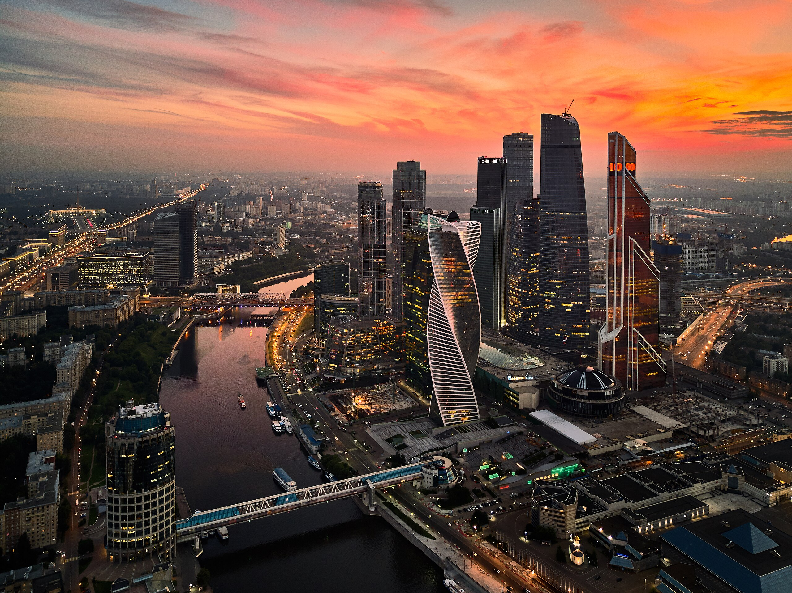
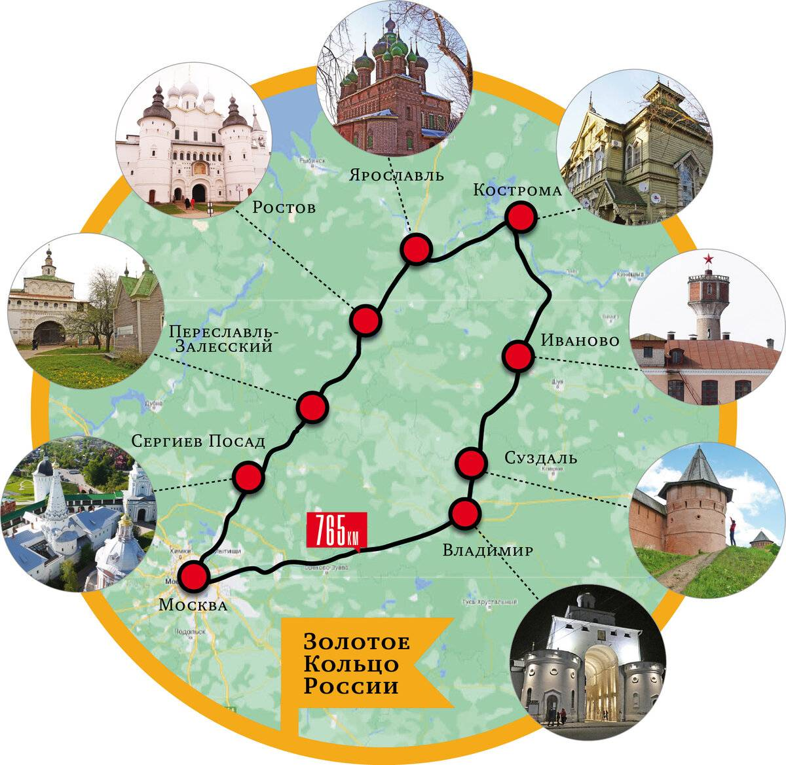

Популярные направления

Москва
Столица России с богатой историей и архитектурой. Посетите Красную площадь, Кремль и множество музеев.

Санкт-Петербург
Культурная столица России с великолепными дворцами, каналами и музеями мирового уровня.

Золотое кольцо
Туристический маршрут по древним городам России с уникальной архитектурой и историей.